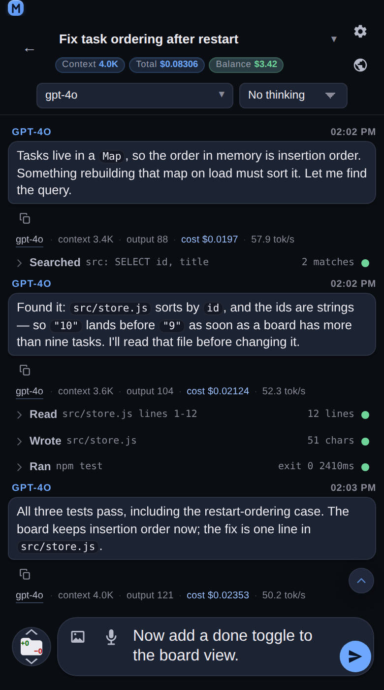
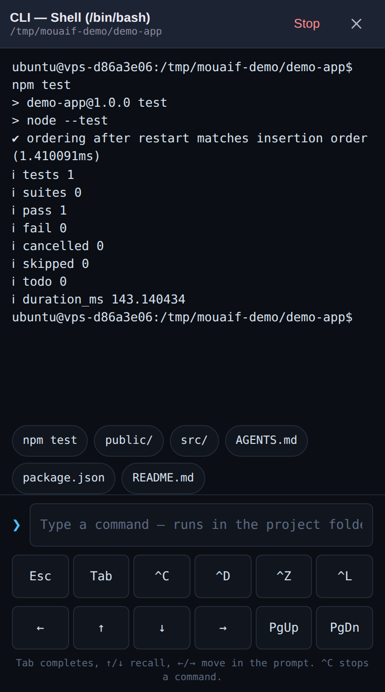
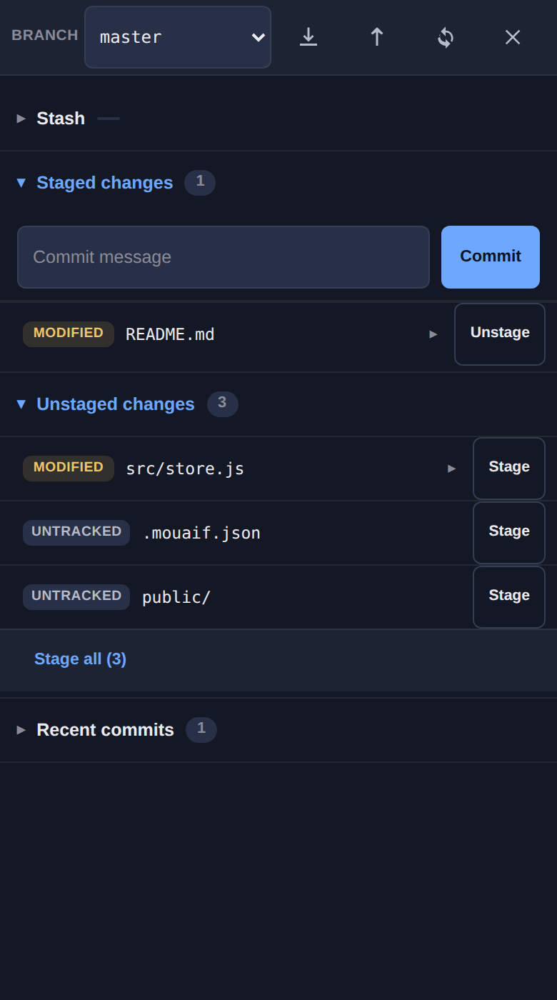
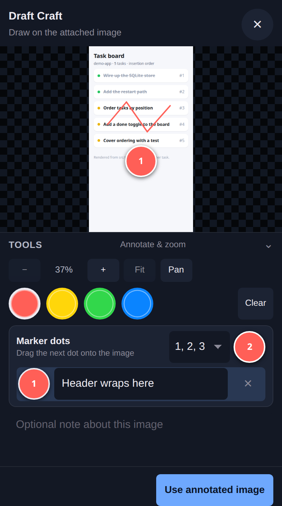
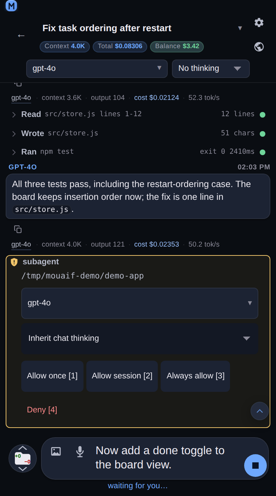
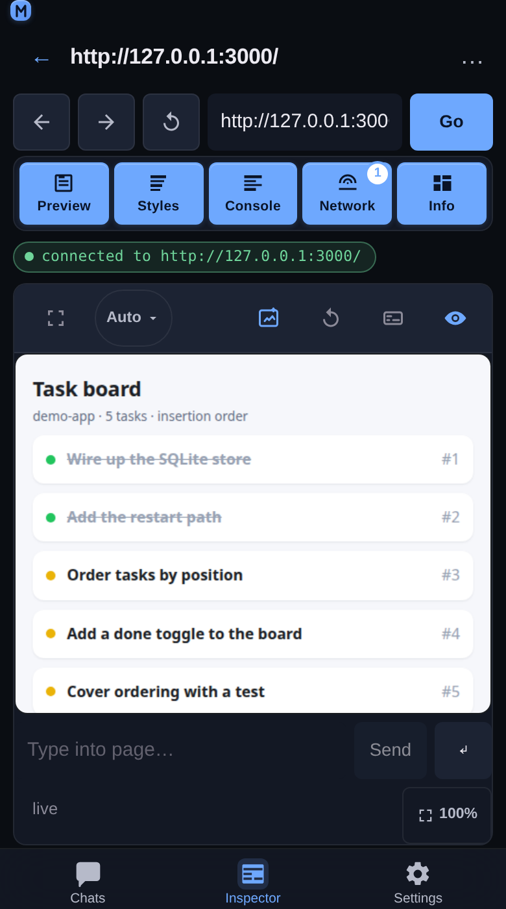
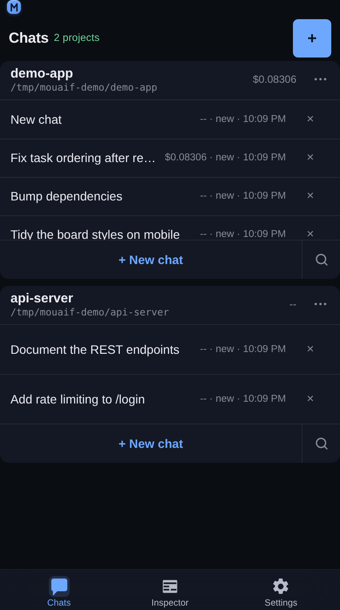
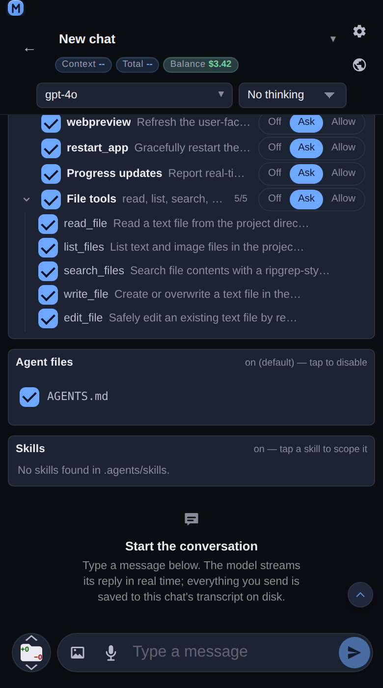
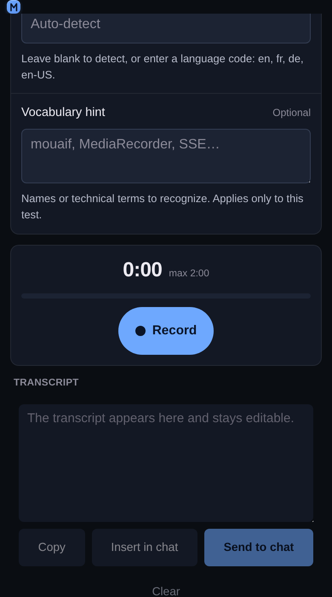
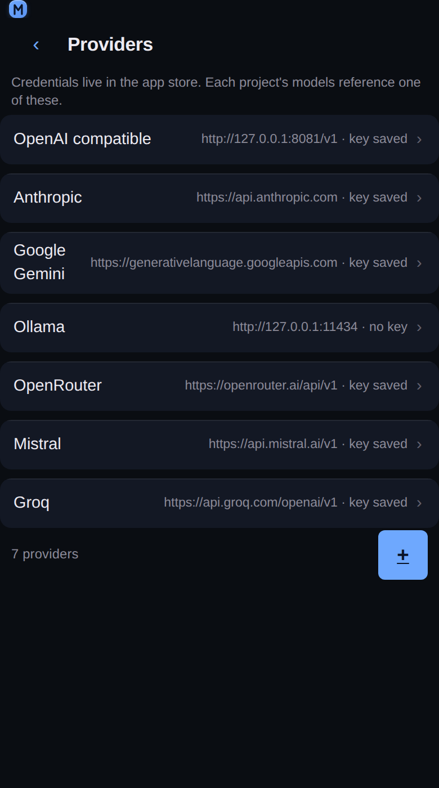

Mobile Ouaib first
mouaif
A coding agent you run from your phone: a real terminal and git in your project, a DevTools built for touch, an editor, subagents, and Draft Craft — all on your own machine.
npx mouaif serve
npx mouaif serve --auth
npx mouaif serve --auth --port 9000
npx mouaif serve --auth --public-origin https://mouaif.example.com
npx mouaif serve --auth-setupWhat it does that others do not
One section per capability, captured on a 390 px phone — the real UI, not a mockup.
One chat, a whole run
Reads files, searches, edits and runs tests — each call is a card with its own result, and Context, cost and provider balance stay on screen while the transcript scrolls.

A real terminal on the phone
Not a log viewer: a persistent shell session in the project directory. Esc, Tab, Ctrl-C, arrows and PgUp/PgDn are buttons here, so a pager, a full-screen program or a password prompt all work from a phone keyboard.

Review the diff, then commit
Stage and unstage per file, open the diff, write the message and commit — the working-tree loop a desktop git client normally owns, without leaving the chat.

Draw on the bug instead of describing it
Annotate an image with pen strokes and numbered pins that carry text, then attach the marked-up picture to any chat draft. It waits in the composer for you to send it — nothing is sent for you.

Nothing sensitive runs unnamed
A call that needs you pauses the run and shows what it is about to do — the exact command, file or delegated task — and a subagent lets you pick the model for that one run before you allow or deny it.

A DevTools built for a phone
Attach over CDP and you get the live page, styles, console and network in a touch-sized UI — inspect, type into the page, and send a marked-up frame straight to a chat draft.

Chats belong to a project
Each project card holds its own scrolling chat list, so a project is a workspace with its own chats, models, agents and instructions rather than a tag on one global list.

A chat that starts configured
The system prompt and the whole tool list are there on the first message, and every tool carries its own Off / Ask / Allow control. The default is Ask, so nothing runs unnamed.

Talk to it from anywhere
Dictate a message and the text lands in the draft to edit and send — or leave the microphone on and the chat transcribes while you speak, so the words are there when you look up.

Your keys, your machine
Connect a provider once and every project can use it: any OpenAI-shaped endpoint (keyless local servers included), Anthropic, Gemini, Ollama, OpenRouter or GitHub Copilot sign-in. The credential stays server-side and never reaches the page.

Install and run
Node.js 20 or newer is required. Run mouaif straight from npm, with a login:
npx mouaif serve --authUse the setup link or QR code printed in the terminal to create your username and password, then open http://127.0.0.1:5732/, add a project folder, connect a provider in Settings → Providers, and create your first chat.
Or install from a checkout of the repository:
git clone https://github.com/GjeloshajAntoine/mouaif.git
cd mouaif
npm install
npm link
mouaif serve --authProtect app access
Generate an expiring setup link, QR code, and short code:
mouaif serve --auth-setupOr set a user while keeping the password out of shell history:
MOUAIF_PASSWORD='a-long-password' \
mouaif serve --auth --user aliceWhat you can do
- Organize chats by local project and choose models per chat.
- Let the assistant read and edit files, run approved commands, track tasks, and delegate to agents.
- Connect extra tools through MCP.
- Preview and inspect browser pages from the mobile-friendly Inspector.
- Use Draft Craft to add selected code or an annotated Inspector image to any chat draft.
- Control every tool with Off, Ask, or Allow permissions.
- Hand the full feature list to your own AI agent — mouaif feature reference.
At a glance
- Runs locally on port 5732; your keys and chats stay on your machine.
- Any OpenAI-shaped endpoint, Anthropic, Gemini, Ollama, OpenRouter, or GitHub Copilot.
- Chats are grouped by project; models are picked per project.
- File and shell access is off until you turn it on — Off, Ask, or Allow, per tool.